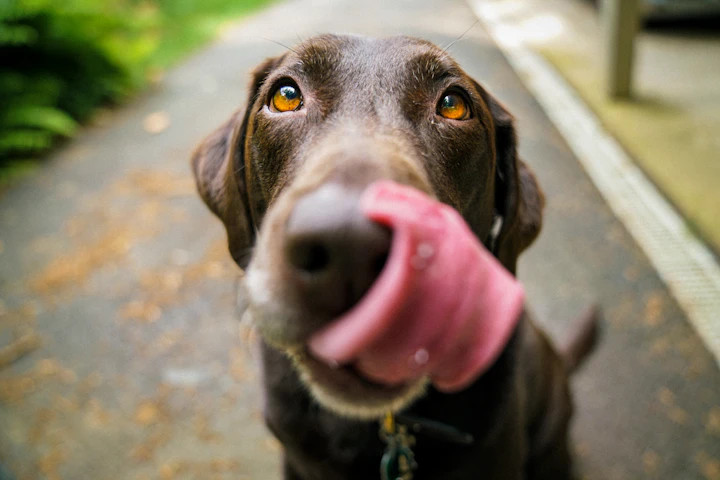
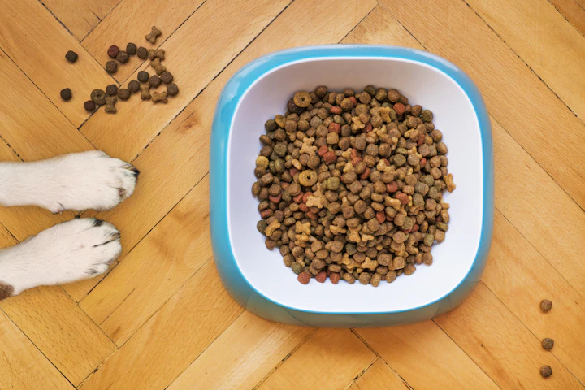
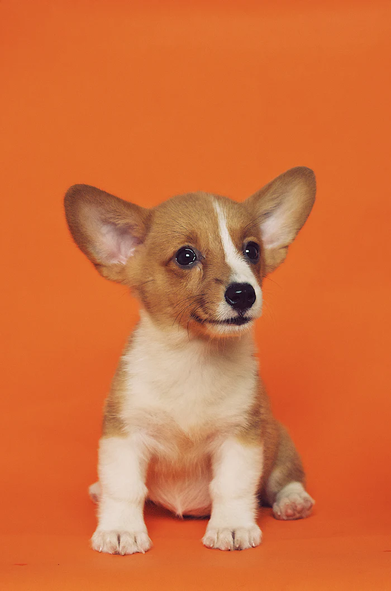
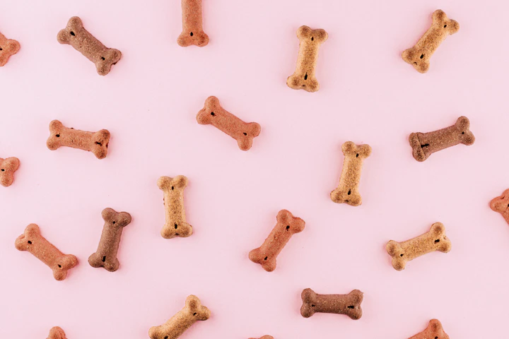

Dentistry
Gingivitis to Periodontitis: The Stages of Oral Decay
Recognizing early redness along pet gums and why waiting until teeth wobble makes surgical extractions unavoidable.
Read EntryPractical, veterinarian-reviewed health articles written to help you make informed daily decisions for dogs and cats across every stage of their lives.


How proteins, digestible fibers, moisture content, and life-stage AAFCO declarations genuinely influence your companion's gut microbiome, skin barrier, and vitality.
Filter our veterinary articles by life stage, preventive care, behavior, or clinical nutrition.
Recognizing early redness along pet gums and why waiting until teeth wobble makes surgical extractions unavoidable.
Read EntryFrom weaning to social litterbox habits, how early environmental enrichment creates confident indoor companions.
Read Entry
Senior CareSimple home adaptations like runner rugs on hardwood, elevated dishes, and anti-slip stairs make huge mobility differences.
Read EntryThe neurodevelopmental window between 8 and 16 weeks of age is the most influential period in a dog's lifetime. Exposing puppies safely to diverse surfaces, sounds, and people builds lifelong emotional resilience.

Cats are naturally sensitive to substrate textures and environmental changes. Teaching kittens to love their travel carriers transforms future veterinary visits into calm outings.
Carrying even 15% extra body weight shortens a dog or cat's lifespan by up to two years and drastically elevates the incidence of osteoarthritis, pancreatitis, and diabetes.
Rather than focusing purely on scale weight, veterinary clinicians use a 1 to 9 Body Condition Score. Can you easily palpate your dog's ribs without excess fat layers?
Not all vaccines are required for every pet. Understanding how transmission vectors dictate need empowers pet parents.
Rabies and Parvovirus have high fatality rates and public health implications; universal vaccination is medically necessary for all companion pets.
Leptospirosis, Lyme, and Bordetella depend on regional wildlife prevalence, standing puddle water, grooming salon visits, and hiking habits.
For older pets or those with documented past vaccine sensitivities, antibody titers verify whether sufficient immune memory remains active.
Pets are master stoics; dogs and cats rarely vocalize chronic pain. Instead, signs appear as reluctance to jump onto sofas, nighttime wandering, or changes in grooming.
Never use human toothpaste on animals due to toxic foaming agents and xylitol. Enzymatic veterinary pastes taste like poultry or malt and dissolve plaque without vigorous scrub pressure.

When a dog turns its head away, licks its lips rapidly without food present, or shows the whites of its eyes, it is signaling displacement anxiety. Recognizing these cues prevents defensive bite escalation.
Weather changes bring unique biological hazards: hot asphalt burns in summer, road salt paw cracks and antifreeze in winter, and toxic chocolate around holidays.
Never leave pets in parked cars even with cracked windows. Asphalt above 85°F burns paw pads within sixty seconds. Walk in early mornings.
Rock salt and chemical de-icers irritate paw pads and cause oral toxicity when licked off. Wipe paws with damp washcloths after snowy walks.
Keep chocolate, xylitol baked sweets, grapes, onions, and lilies (strictly fatal to cats) far away from kitchen counter reaches.
How to responsibly interpret online veterinary advice and when to seek urgent clinical attention.